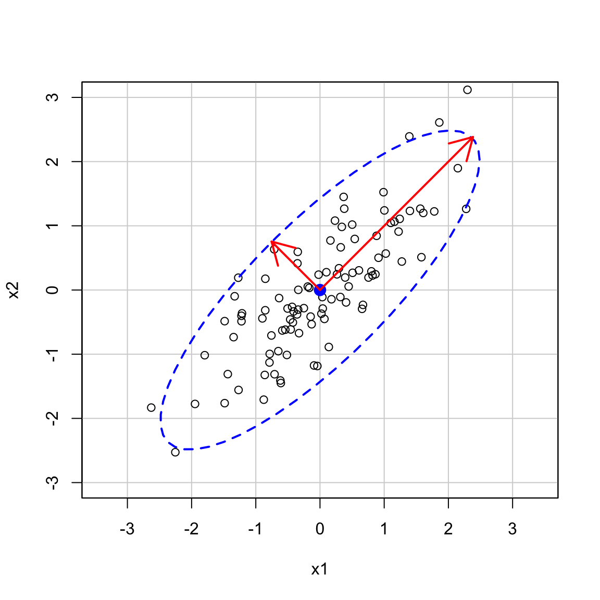

here::here("code", "_common.R") |>
source()
# Load packages
if (!requireNamespace("pacman")) install.packages("pacman")
pacman::p_load(readr)26 Analisi delle componenti principali
In questo capitolo imparerai a
- eseguire la PCA usando l’algebra lineare;
- eseguire la PCA usando R.
Prerequisiti
- Leggere il capitolo Factor Analysis and Principal Component Analysis del testo di Petersen (2024).
Preparazione del Notebook
26.1 Introduzione
L’Analisi delle Componenti Principali (PCA) è una tecnica di riduzione dei dati che permette di semplificare analisi complesse riducendo un grande numero di variabili correlate a un insieme più piccolo di componenti principali. Queste componenti sono nuove variabili calcolate come combinazioni lineari delle variabili originali, progettate per spiegare la massima varianza possibile nei dati.
In psicologia, la PCA è ampiamente utilizzata per:
- Ridurre il numero di variabili in studi con molti questionari o test psicometrici.
- Identificare le dimensioni sottostanti a un set di item (ad esempio, esplorare le dimensioni latenti di una scala).
- Preparare i dati per analisi successive (ad esempio, in regressioni o modelli strutturali).
26.1.1 Perché Usare la PCA in Psicologia?
Quando un grande numero di variabili è fortemente correlato, può essere difficile interpretare i dati. In questi casi, la PCA permette di semplificare l’analisi mantenendo gran parte dell’informazione originale:
- Le componenti principali catturano la varianza condivisa tra le variabili, fornendo un riepilogo efficace dei dati.
- Se le prime componenti principali spiegano una quota sostanziale della varianza totale, possiamo ridurre il numero di variabili senza perdere significative informazioni.
26.1.2 Cos’è la Varianza Totale?
La varianza totale rappresenta la quantità complessiva di variabilità nei dati. Nella PCA, è definita come la somma delle varianze delle variabili originali. Ad esempio, se abbiamo un dataset con tre variabili, la varianza totale è:
\[ \text{Varianza Totale} = \sigma_1^2 + \sigma_2^2 + \sigma_3^2 , \]
dove \(\sigma_i^2\) è la varianza della variabile \(i\)-esima.
Nella PCA:
- Gli autovalori (eigenvalues) rappresentano la varianza spiegata da ciascuna componente principale.
- La somma degli autovalori corrisponde alla varianza totale dei dati:
\[ \text{Somma degli autovalori} = \text{Varianza Totale} \]
26.1.3 Un Nuovo Sistema di Coordinate
La PCA può essere interpretata come una ridescrizione dei dati in un nuovo sistema di assi coordinati. Questi nuovi assi (le componenti principali) sono calcolati come segue:
- Le componenti principali sono orientate lungo le direzioni di massima varianza nei dati.
- La prima componente principale (PC1) è la direzione che spiega la massima quantità di varianza.
- La seconda componente principale (PC2) è ortogonale alla prima e spiega la successiva maggiore quantità di varianza, e così via.
Questo significa che la PCA non elimina le variabili, ma le ricombina in modo tale da rappresentare i dati in un sistema più semplice e interpretabile.
Esempio Pratico. Supponiamo di avere 10 variabili in un questionario psicologico, molte delle quali sono fortemente correlate. Con la PCA, potremmo scoprire che le prime due componenti principali spiegano l’80% della varianza totale. In questo caso, potremmo ridurre l’analisi a queste due componenti, semplificando notevolmente l’interpretazione.
26.1.4 Riduzione della Dimensionalità
L’obiettivo principale della PCA è dunque quello di identificare il minor numero di componenti che spiegano la maggior parte della varianza nei dati. In psicologia, questo è particolarmente utile quando:
- Si vuole ridurre il numero di variabili per facilitare l’interpretazione.
- Si cerca di individuare dimensioni sottostanti (ad esempio, in uno studio sui tratti di personalità).
Ad esempio, in uno studio sui Big Five, la PCA potrebbe ridurre centinaia di item iniziali alle cinque dimensioni principali.
26.1.5 Interpretazione dei Risultati
La PCA produce due risultati principali:
Punteggi delle Componenti Principali: Ogni osservazione ottiene un punteggio per ciascuna componente principale, che rappresenta la sua posizione nel nuovo spazio.
Varianza Spiegata: La proporzione di varianza spiegata da ciascuna componente principale è un indicatore della sua importanza: \(\text{Varianza Spiegata per PC} = \text{Autovalore della PC} / \text{Somma degli autovalori}\).
Se, ad esempio, la PC1 spiega il 60% della varianza e la PC2 il 20%, possiamo concludere che le prime due componenti rappresentano l’80% della variabilità nei dati.
In sintesi, la PCA è uno strumento potente per semplificare e interpretare dataset complessi in psicologia, soprattutto quando ci troviamo di fronte a molte variabili correlate. Questo metodo non solo facilita l’analisi, ma può anche fornire una nuova prospettiva sulle relazioni tra le variabili, evidenziando dimensioni latenti che altrimenti potrebbero non essere immediatamente evidenti.
26.2 Tutorial
Esaminiamo qui di seguito l’analisi delle componenti principali passo passo.
26.2.1 Passo 1: Creare un dataset
Per cominciare, generiamo un dataset di esempio per applicare la PCA.
# Generare un dataset con due variabili correlate
set.seed(123)
X <- data.frame(
x1 = rnorm(100, mean = 5, sd = 2),
x2 = rnorm(100, mean = 10, sd = 3)
)
X$x2 <- 0.8 * X$x1 + rnorm(100, mean = 0, sd = 1) # Introduciamo correlazione26.2.2 Passo 2: Standardizzare i dati
Prima di calcolare la PCA, è importante standardizzare le variabili (sottrarre la media e dividere per la deviazione standard) per garantire che abbiano lo stesso peso.
# Centrare e scalare le variabili
X_scaled <- scale(X)
# Plot con aspect ratio 1
plot(X_scaled[, 1], X_scaled[, 2], asp = 1,
col = "blue", pch = 19,
main = "Dati standardizzati con aspect ratio = 1",
xlab = "Variabile x1 standardizzata",
ylab = "Variabile x2 standardizzata")car::dataEllipse(
X_scaled[, 1], X_scaled[, 2],
levels = 0.95,
lty = 2,
ylim = c(-3, 3),
xlim = c(-3, 3),
asp = 1,
)26.2.3 Passo 3: Calcolare la matrice di covarianza
La PCA utilizza la matrice di covarianza per calcolare le componenti principali.
26.2.4 Passo 4: Calcolare autovalori e autovettori
Utilizziamo l’algebra lineare per ottenere gli autovalori e gli autovettori della matrice di covarianza.
print(eigenvectors)
#> [,1] [,2]
#> [1,] 0.707 -0.707
#> [2,] 0.707 0.707Gli autovalori rappresentano la varianza spiegata dalle componenti principali, mentre gli autovettori indicano le direzioni delle componenti principali.
# First eigenvector
ev_1 <- eigen_decomp$vectors[, 1]
# Slope of the first eigenvector
ev1_m <- ev_1[2] / ev_1[1]
# Second eigenvector
ev_2 <- eigen_decomp$vectors[, 2]
# Slope of the second eigenvector
ev2_m <- ev_2[2] / ev_2[1]# Scatter plot showing the span of both eigenvectors
data.frame(zx=X_scaled[, 1], zy= X_scaled[, 2]) |>
ggplot(aes(x = zx, y = zy)) +
geom_point(color = "blue", size = 2) +
geom_vline(xintercept = 0, linewidth = .5) +
geom_hline(yintercept = 0, linewidth = .5) +
geom_abline(slope = ev1_m, color = "blue", linewidth = 0.7) +
geom_abline(slope = ev2_m, color = "red", linewidth = 0.7) Gli autovettori sono ortogonali:
Generiamo uno Scree Plot.
# Calculate the estimated variance for each eigenvalue
e_var <- eigen_decomp$values / (length(X_scaled[, 1]) - 1)
# Data frame with variance percentages
var_per <- tibble(
PC = c("PC1", "PC2"),
PER = c(e_var) * 100 / sum(e_var) # Calculate the percentage
)
# Scree plot
ggplot(var_per, aes(x = PC, y = PER)) +
geom_col(width = 0.5, color = "black") +
xlab("Principal component") +
ylab("Percentage of variation (%)") Verifichiamo che la somma degli autovalori sia uguale alla varianza totale.
eigen_decomp$values |> sum()
#> [1] 2Gli autovettori ottenuti utilizzando la funzione eigen() sono normalizzati. Ciò significa che la loro lunghezza è uguale a 1:
Utilizziamo le informazioni degli autovettori e degli autovalori per disegnare gli assi dell’ellisse:
- gli autovettori determinano la direzione degli assi;
- la radice quadrata degli autovalori è proporzionale alla lunghezza degli assi dell’ellisse.
car::dataEllipse(
X_scaled[, 1], X_scaled[, 2],
levels = 0.95,
lty = 2,
ylim = c(-3, 3),
xlim = c(-3, 3),
asp = 1
)
k <- 2.5
arrows(
0, 0,
k * sqrt(eigen_decomp$values[1]) * eigen_decomp$vectors[1],
k * sqrt(eigen_decomp$values[1]) * eigen_decomp$vectors[2],
code = 2,
col = "red",
lwd = 2
)
arrows(
0, 0,
k * sqrt(eigen_decomp$values[2]) * eigen_decomp$vectors[1],
k * sqrt(eigen_decomp$values[2]) * -eigen_decomp$vectors[2],
code = 2,
col = "red",
lwd = 2
)
Tale analisi si può estendere a qualunque numero di variabili. Per esempio, nel caso di tre variabili, possiamo pensare di disegnare un ellisoide attorno ad una nube di punti nello spazio tridimensionale. Anche in questo caso, gli autovalori e gli associati autovettori corrisponderanno agli assi dell’elissoide.
26.2.5 Passo 5: Proiettare i dati sulle componenti principali
Per calcolare i punteggi delle Componenti Principali, dobbiamo proiettare ortogonalmente i punti originali del dataset sulle nuove coordinate, definite dalle direzioni principali (autovettori). Questo processo ci permette di rappresentare ogni osservazione nello spazio delle componenti principali.
Nell’algebra lineare, la proiezione ortogonale consiste nel trovare la posizione di un punto su una retta o un piano, in modo che il vettore risultante sia perpendicolare alla direzione di proiezione.
Nel contesto della PCA:
- Gli autovettori rappresentano le direzioni principali (componenti principali) lungo cui la varianza dei dati è massimizzata.
- Proiettare un punto sui componenti principali significa calcolare la sua posizione lungo queste nuove direzioni.
26.2.5.1 Formulazione Matematica
Consideriamo le seguenti matrici:
- \(\mathbf{X}_{\text{scaled}}\): la matrice dei dati standardizzati, in cui ogni riga rappresenta un’osservazione e ogni colonna una variabile.
- \(\mathbf{V}\): la matrice degli autovettori, le cui colonne rappresentano le nuove direzioni principali.
La proiezione dei dati nello spazio delle componenti principali si calcola come:
\[ \mathbf{Z} = \mathbf{X}_{\text{scaled}} \cdot \mathbf{V} \]
dove:
- \(\mathbf{Z}\) è la matrice dei punteggi delle componenti principali.
- Ogni riga di \(\mathbf{Z}\) rappresenta un’osservazione trasformata nello spazio delle componenti principali.
- Ogni colonna di \(\mathbf{Z}\) corrisponde a una componente principale (ad esempio, PC1, PC2).
26.2.5.2 Implementazione in R
In R, questo calcolo può essere realizzato attraverso il prodotto matrice-matrice. Ecco il codice per calcolare i punteggi delle componenti principali:
Per verificare i risultati, possiamo visualizzare i primi punteggi calcolati:
26.2.5.3 Interpretazione dei Punteggi
Ogni valore in pc_scores rappresenta la posizione dell’osservazione nello spazio trasformato delle componenti principali:
- La PC1 è la direzione lungo cui si osserva la massima varianza dei dati.
- La PC2 è la direzione ortogonale successiva con la seconda massima varianza, e così via.
26.3 Passo 6: Confrontare con l’output di prcomp
Utilizziamo la funzione prcomp di R per confermare i risultati.
26.3.1 Passo 7: Visualizzare la proiezione dei dati
Possiamo visualizzare i punti originali proiettati sulle componenti principali.
# Grafico del dataset originale
plot(
X_scaled,
col = "blue", pch = 19,
main = "Dati originali e componenti principali",
asp = 1
)
abline(0, eigenvectors[2,1] / eigenvectors[1,1], col = "red", lwd = 2)
# Prima componente
abline(0, eigenvectors[2,2] / eigenvectors[1,2], col = "green", lwd = 2)
# Seconda componente# Grafico delle componenti principali
plot(
pc_scores,
col = "blue", pch = 19,
main = "Punteggi delle componenti principali",
asp = 1)
26.4 Biplot
Il biplot è uno strumento grafico che combina la visualizzazione dei punteggi delle componenti principali e delle variabili originali in un unico grafico. Questo permette di:
- Interpretare la relazione tra le variabili originali.
- Visualizzare come le osservazioni (campioni) si distribuiscono nello spazio delle componenti principali.
- Identificare cluster, outlier, o pattern nei dati.
Un biplot combina due tipi di informazioni:
- I punteggi delle componenti principali (proiezioni delle osservazioni sulle componenti principali), rappresentati come punti.
- I carichi delle variabili originali sulle componenti principali (autovettori), rappresentati come frecce.
Le frecce indicano:
- La direzione della variabilità spiegata da ciascuna variabile.
- La correlazione tra le variabili e le componenti principali.
26.4.1 Come Creare un Biplot in R
Per creare un biplot in R possiamo utilizzare prcomp. Supponiamo di avere già calcolato la PCA con la funzione prcomp:
# PCA con prcomp
pca <- prcomp(X, scale. = TRUE)Il biplot si visualizza nel modo seguente.
# Creare un biplot
biplot(
pca, scale = 0,
main = "Biplot delle Componenti Principali",
xlab = "PC1", ylab = "PC2"
)
-
scale = 0: Evita di ridimensionare le frecce e i punteggi per semplificare l’interpretazione.
Nel grafico:
- I punti rappresentano le osservazioni, proiettate sulle componenti principali.
-
Le frecce rappresentano le variabili originali, con:
- La lunghezza della freccia che indica la forza della correlazione con le componenti principali.
- L’angolo tra due frecce che rappresenta la correlazione tra le due variabili:
- Un angolo piccolo indica una correlazione positiva.
- Un angolo di 90° indica una correlazione nulla.
- Un angolo ampio (vicino a 180°) indica una correlazione negativa.
26.4.2 Interpretazione
In psicologia, il biplot è particolarmente utile per:
- Identificare pattern nei dati: Ad esempio, come i partecipanti si distribuiscono lungo dimensioni psicologiche latenti (es. tratti di personalità).
- Esaminare le relazioni tra variabili: Le frecce possono evidenziare cluster di variabili correlate che rappresentano dimensioni psicologiche (es. ansia, stress, depressione).
- Valutare l’adeguatezza della PCA: Se le frecce delle variabili sono lunghe e ben distribuite lungo le componenti principali, ciò suggerisce che la PCA sta spiegando bene la varianza delle variabili.
In sostanza, il biplot è uno strumento grafico che semplifica l’interpretazione della PCA. Combina in un unico diagramma sia le informazioni sulle variabili originali che sulla loro proiezione nello spazio delle componenti principali, offrendo una visione d’insieme chiara e immediata dei dati.
Informazioni sull’Ambiente di Sviluppo
sessionInfo()
#> R version 4.4.2 (2024-10-31)
#> Platform: aarch64-apple-darwin20
#> Running under: macOS Sequoia 15.3.1
#>
#> Matrix products: default
#> BLAS: /Library/Frameworks/R.framework/Versions/4.4-arm64/Resources/lib/libRblas.0.dylib
#> LAPACK: /Library/Frameworks/R.framework/Versions/4.4-arm64/Resources/lib/libRlapack.dylib; LAPACK version 3.12.0
#>
#> locale:
#> [1] C/UTF-8/C/C/C/C
#>
#> time zone: Europe/Rome
#> tzcode source: internal
#>
#> attached base packages:
#> [1] stats graphics grDevices utils datasets methods base
#>
#> other attached packages:
#> [1] ggokabeito_0.1.0 see_0.10.0 MASS_7.3-65 viridis_0.6.5
#> [5] viridisLite_0.4.2 ggpubr_0.6.0 ggExtra_0.10.1 gridExtra_2.3
#> [9] patchwork_1.3.0 bayesplot_1.11.1 semTools_0.5-6 semPlot_1.1.6
#> [13] lavaan_0.6-19 psych_2.4.12 scales_1.3.0 markdown_1.13
#> [17] knitr_1.49 lubridate_1.9.4 forcats_1.0.0 stringr_1.5.1
#> [21] dplyr_1.1.4 purrr_1.0.4 readr_2.1.5 tidyr_1.3.1
#> [25] tibble_3.2.1 ggplot2_3.5.1 tidyverse_2.0.0 here_1.0.1
#>
#> loaded via a namespace (and not attached):
#> [1] rstudioapi_0.17.1 jsonlite_1.9.0 magrittr_2.0.3
#> [4] TH.data_1.1-3 estimability_1.5.1 farver_2.1.2
#> [7] nloptr_2.1.1 rmarkdown_2.29 vctrs_0.6.5
#> [10] minqa_1.2.8 base64enc_0.1-3 rstatix_0.7.2
#> [13] htmltools_0.5.8.1 broom_1.0.7 Formula_1.2-5
#> [16] htmlwidgets_1.6.4 plyr_1.8.9 sandwich_3.1-1
#> [19] emmeans_1.10.7 zoo_1.8-13 igraph_2.1.4
#> [22] mime_0.12 lifecycle_1.0.4 pkgconfig_2.0.3
#> [25] Matrix_1.7-2 R6_2.6.1 fastmap_1.2.0
#> [28] rbibutils_2.3 shiny_1.10.0 digest_0.6.37
#> [31] OpenMx_2.21.13 fdrtool_1.2.18 colorspace_2.1-1
#> [34] rprojroot_2.0.4 Hmisc_5.2-2 labeling_0.4.3
#> [37] timechange_0.3.0 abind_1.4-8 compiler_4.4.2
#> [40] withr_3.0.2 glasso_1.11 htmlTable_2.4.3
#> [43] backports_1.5.0 carData_3.0-5 ggsignif_0.6.4
#> [46] corpcor_1.6.10 gtools_3.9.5 tools_4.4.2
#> [49] pbivnorm_0.6.0 foreign_0.8-88 zip_2.3.2
#> [52] httpuv_1.6.15 nnet_7.3-20 glue_1.8.0
#> [55] quadprog_1.5-8 nlme_3.1-167 promises_1.3.2
#> [58] lisrelToR_0.3 grid_4.4.2 checkmate_2.3.2
#> [61] cluster_2.1.8 reshape2_1.4.4 generics_0.1.3
#> [64] gtable_0.3.6 tzdb_0.4.0 data.table_1.17.0
#> [67] hms_1.1.3 car_3.1-3 sem_3.1-16
#> [70] pillar_1.10.1 rockchalk_1.8.157 later_1.4.1
#> [73] splines_4.4.2 lattice_0.22-6 survival_3.8-3
#> [76] kutils_1.73 tidyselect_1.2.1 miniUI_0.1.1.1
#> [79] pbapply_1.7-2 reformulas_0.4.0 stats4_4.4.2
#> [82] xfun_0.51 qgraph_1.9.8 arm_1.14-4
#> [85] stringi_1.8.4 yaml_2.3.10 pacman_0.5.1
#> [88] boot_1.3-31 evaluate_1.0.3 codetools_0.2-20
#> [91] mi_1.1 cli_3.6.4 RcppParallel_5.1.10
#> [94] rpart_4.1.24 xtable_1.8-4 Rdpack_2.6.2
#> [97] munsell_0.5.1 Rcpp_1.0.14 coda_0.19-4.1
#> [100] png_0.1-8 XML_3.99-0.18 parallel_4.4.2
#> [103] jpeg_0.1-10 lme4_1.1-36 mvtnorm_1.3-3
#> [106] openxlsx_4.2.8 rlang_1.1.5 multcomp_1.4-28
#> [109] mnormt_2.1.1